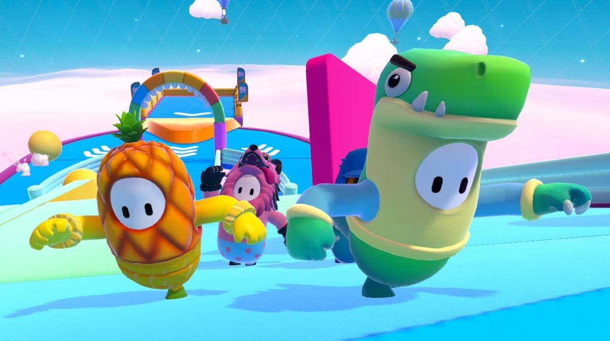
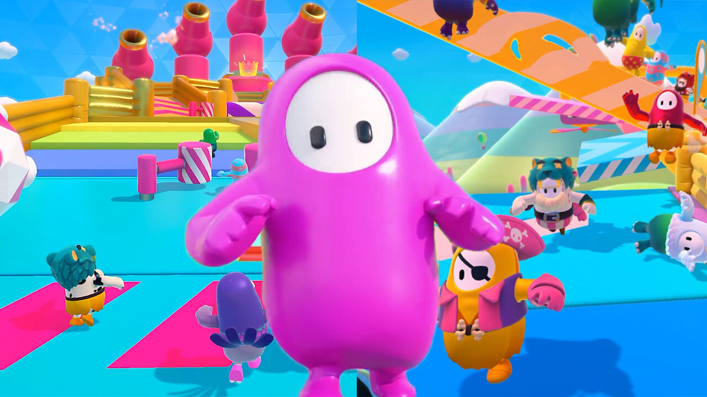

Fall Guys: Ultimate Knockout has rapidly become the hottest game of the summer, attracting millions of players within a month of its release. But why is it so popular? CNBC takes a look at some key factors contributing to the game’s success.
| What is Fall Guys? Fall Guys, as the game is more commonly known, is a fresh take on the battle royale genre popularized by well-known shooter titles Fortnite and PlayerUnknown’s Battlegrounds. Unlike those games, which see up to 100 players fight to be the last person standing, Fall Guys takes a different — and more comical — approach. Up to 60 people play as jelly beans trying to navigate through a series of candy-colored obstacle courses to win a coveted prize: crowns. These crowns act as in-game currency which players use to buy skins — cosmetic items that have no bearing on gameplay. There are also so-called “kudos,” a less valuable currency players can earn either by playing the game or purchasing them. The latter option, often referred to as “microtransactions,” are common across the industry.  |  Developed by British indie studio Mediatonic, Fall Guys takes inspiration from classic TV game shows like Takeshi’s Castle and Total Wipeout. There’s a variety of levels that are randomly selected each time a player launches a session or advances to the next stage. It can often be a chaotic experience, with players having to avoid swinging balls, jump over spinning rods and memorize fruit to avoid falling into a pit of slime. Why is it so popular? One is its deal with Sony, which saw Fall Guys added to PS Plus, a subscription service that gives players access to two free games each month. A downside of this launch strategy is that it doesn’t include important platforms like Microsoft’s Xbox One and the Nintendo Switch, but these could be supported later down the line. | Players only need to know three controls — running, jumping and grabbing — meaning it’s much easier for newcomers to learn how to play. Then there’s the virality of Fall Guys on streaming platforms like Amazon’s Twitch and Google’s YouTube, as well as social media. |